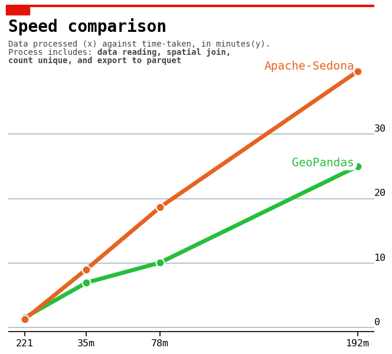

I planned this to be a shorter entry, I just want to point out what should I do in my next project, some sort of lessons learned from this project, then some thought on some alternatives that I tried to finish this project.
The Case of Obviousness
Pluralitas non est ponenda sine necessitate
why does anything in latin sounds so big brained? 🤔
While writing my previous post on how to speed up my python script, I realized something. All the alternatives I tried is somewhat too complex. That one liner part could be what I really need. A simple, straightforward solution.
AND YES. THAT. IS. THE. SOLUTION. (╯°□°)╯︵ ┻━┻
But, before I embarrassingly admit to my stupidity—and to reduce the self-inflicted damage—I will give you some context on why such was the case.
- This is actually the initial plan. Initially we want to do all the process inside ArcGIS Pro. However, what we wanted to achieve is not natively provided by ArcGIS Pro, hence the decision to use python on some of the process. In this case, the change in tools should be followed in change of methods. Didn't happen.
- The data is huge, we knew that already. Doing a simple reading, querying, and writing sometimes took a while. In my mind, that implies, the spatial join will also be a long time. That is why in my syntax, I filter the point data first, expecting the spatial join process can be faster. But I don't know (still to this point) whether GeoPandas applies a spatial indexing or not. This is some process that gives an index to the geometries. Basically make the computer find which geometries belongs where, faster.
No Regret Though
This project "forced" me to learn many tools and pointed out my weakness, or in a more positive term, room for improvement. And learning these things really is the fun part of this project.
Alternative comparison
On the previous post, I mentioned about using faster libraries as one of the option to make the script faster. In this project, the hardest part was to work with the geospatial data. Only a handful libraries can handle geospatial data processing. I tried 3 of them in search of the fastest one. Here's the result, roughly.

Sadly, I didn't manage to process my data using DuckDB, it stuck while doing spatial join, even with only 1 day data.
I'm not really about this result myself, I think I still need to get the best configuration out of the 3 libraries to utilize them to the fullest. On the side note, I remember I managed to processed the 7 day worth of record in under 2 minutes using apache-sedona, that is why I still confused about the linear result yielded by sedona.
But of course, it's not only about speed, a data scientist doesn't work in isolation, you need to integrate the solution to the complete pipeline. Hence one should also consider how easy it is to install, use, and integrate with other technology, here's my opinion on 3 of them.
| Library | Setup | Workflow Integration |
|---|---|---|
| GeoPandas |
Arguably easy. By default, you just need to put conda install geopandas==version.
The caveat here is that, I haven't successfully manage to install
GeoPandas inside ArcGIS Pro built-in python environment.
|
Very easy. This is just adding another line to your script. The syntax is intuitive since they are "based" on pandas. |
| DuckDB |
Easy. You only need to install it. But this is again untested inside ArcGIS Pro built-in python environment. |
Easy. DuckDB is basically a RDBMS (without the hassle of configuring a DB). The python API is pretty solid, and the community (on discord) is quite active, so even though the library is relatively new, it is not so hard to seek for help. I won't put "very easy" because I think to fully utilize duckdb, the SQL part is inevitable, such as creating and managing the database. Lucky for me, since I have a little bit experience with SQL, this is actually what makes me excited to learn the library. |
| Apache-Sedona |
Not as easy. From what I've experienced, you need to install spark, which by itself requires java and python. If you are a newbie like me, this can be daunting. You'll also find dependencies mismatch, which is a nightmare, probably even for a more tenured data scientist. But after a few tries, you will be used to it. But again, compared to the previous 2, it is not as straight forward. |
Not as easy. Apache-Sedona is built on top of pyspark. At first, I found it hard to read the documentation, but then I found this sparkbyexamples, which makes the learning more manageable. I put "not as easy" mostly because I still having a hard time to read a shapefile and write to 1 single file 🙃. |
Internal Technology
There is another option, especially for me, this might be a worth investment.
Enter ArcGIS Developer.
I haven't really tried it yet, but my reading conclude that this is quite promising. I like it probably because I like high level customization and flexibility. ArcGIS Developer as its name suggest, enable the use of ArcGIS, open source, and third-party APIs to access ArcGIS location services. Meaning we can create our own apps using ArcGIS + open source capabilities.
One thing that I don't quite fancy from ArcGIS product is that it sometimes overkill, or to put in another way, the entry-level barrier is quite high. With smaller business size, it is often doesn't make sense to put an investment in this kind of technology.
ArcGIS Developer (seems to, because again, I haven't really tried it) provides this kind of flexibility, use only the things that you really need.
Points to Internalize
Finally, the lessons learned…
Try the easiest/simplest solution first
The mentioned quote by William of Ockham can be roughly translated as "focus on making the MVP first dude". A better one I found on the internet of course is "if you have two competing ideas to explain the same phenomenon, you should prefer the simpler one."
Plan ahead and revisit the plan.
Even—or rather especially—in an ambiguous condition, plan ahead and revisit the plan.
The option to plan ahead was not obvious for me at first because when we are given the initial requirement, I thought this is clear enough. The team were just "planning" on our head on how to solve the problems given. We downplayed the problem, thinking that we don't really need to reconcile our own "plan", at detail.
At the same time, that "clear enough requirement" kept changing and I also do the exploration on the fly, doing exploration and solution development (production) is really a bad idea. This happened because the requirements don't directly come from the user, but rather a "middle men". The situation is similar to when you mom ask you to put the jacket on because she feels cold, not because you feel cold.
This is where a user story can be really helpful. We didn't have user story, no clear acceptance criteria, only request after request.
To this day, where the project is almost finished, I still don't know really how to deal with this condition though. Except to segment the timeline based on the activity, such as, a week for requirement gathering, 3 days for exploration, 2 days for review, 2 weeks for development, 2 days for review, etc.
What to look for in the exploration phase
I'm still learning on how to really do data exploration. To be more specific, "what should I explore?". It's like, what am I really looking for while doing the exploration? But one sense that I'm developing from this project is that, one of the most important thing is to connect the exploration with the project requirements and understand what you are trying to do.
Roughly speaking, while exploring the data you should try to find the outliers from the data, and I'm not speaking only about mathematical outliers.
Suppose you are given a list of POI from a map, a typical person name can be considered as an outliers, because well, you don't expect just a person name to be a POI name, it should have an indicators to indicate what kind of POI is that. Let's say its my name, you will intuitively understand and feel it acceptable to see a POI name as "Amri Rasyidi Barbershop" or "The school of Amri Rasyidi" or "Amri Rasyidi Building".
End Note
From this project only, I found out many things that I should learn, let's name few of them:
- ArcGIS Developer. This is also for my required certification lol.
- Master the IDE. I think it will be helpful if I can use vscode more efficiently.
- Docker, git, and project manager. Again, data scientist doesn't work in isolation, I have to learn how to collaborate better.
- Domain knowledge. This is kind of obvious, better domain knowledge implies better planning and execution.